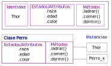
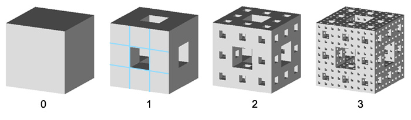

2. Clases y PyVista

Autor: Claudio Canales Donoso
Página: ccdonoso.github.io
Cursos: Mecánica Computacional - Diseño Computarizado
Universidad de Santiago de Chile
Fecha: 05/03/24
License: BSD 3 clause
Contenido : OOP - Pyvista. - Configurando Pyvista - Introducción a la programación orientada a objetos. - Pyvista - Nube de puntos - Triangulación de nube de puntos - Glyphs - Esponja de Menger
Librerías
[3]:
import numpy as np
import matplotlib.pyplot as plt
import pyvista as pv
2.1. Configuración de Pyvista en Jupyter notebook
Instalar Pyvista con el comando
pip install pyvistaLibrería de visualización en Python, basada en la libreria VTK. Es capaz de combinar la velocidad de C++ con la rápida creación de prototipos de Python. Sin embargo, a pesar de esto, el código VTK programado en Python suele tener el mismo aspecto que su homólogo en C++. Esta libreria pretende simplificar la creación de mallas y el trazado sin perder funcionalidad.Instalar
pip install 'jupyterlab>=3' ipywidgets 'pyvista[all,trame]'Esta librería permite realizar la visualización con Pyvista de forma interactiva en Jupyter notebook.
2.1.1. Ejemplo 1
Ejecutar el siguiente código. Si todo esta bien, deberian poder interactuar con la interfaz de Pyvista.
[37]:
from pyvista import examples
# Malla de "nefertiti descargada"
mesh = pv.examples.download_nefertiti()
# Una instancia para plotear off-screen.
pl = pv.Plotter(off_screen=True)
_ = pl.add_mesh(mesh)
# Muestra la malla
pl.show()
#mesh.plot(color='gold', pbr=True, metallic=0.9, background="white", interactive=False)
pl.export_html("nefertiti")
[46]:
from pyvista import examples
# Malla de "nefertiti descargada"
mesh = examples.download_aero_bracket()
# Una instancia para plotear off-screen.
pl = pv.Plotter(off_screen=True)
_ = pl.add_mesh(mesh, smooth_shading=True,
split_sharp_edges=True,
scalars='von Mises stress',
cmap='bwr',
)
# Muestra la malla
pl.show(cpos=cpos)
#mesh.plot(color='gold', pbr=True, metallic=0.9, background="white", interactive=False)
pl.export_html("fem")
2.1.2. Ejemplo 2
[5]:
from pyvista import demos
mesh = demos.glyphs(2)
text = demos.logo.text_3d("Soy interactivo!", depth=0.3)
text.points *= 0.1
text.translate([0, 1.4, 1.5])
mesh += text
mesh['Example Scalars'] = mesh.points[:, 0]
mesh.plot(cpos='xy', show_scalar_bar=True,background="white")
2.2. Introducción Clases Python
La programación orientada a objetos (POO) se basa en el concepto de objetos, que a su vez suelen ser generados por clases. La filosofía de la POO se resume generalmente en cuatro conceptos básicos:
abstracción - mostrar sólo ciertas características al usuario
encapsulación - agrupar ciertas características
herencia - reutilizar y extender características
polimorfismo - permitir que los objetos adopten diversas formas
Algunas de las principales ventajas que ofrece la programación orientada a objetos, directamente relacionadas con estos conceptos básicos, son las siguientes
reutilización - minimización de la cantidad de código copiado y pegado
Mantenibilidad: minimizar la cantidad de código que hay que cambiar para corregir un error.
Seguridad: minimizar el uso indebido por parte de un usuario.
En este tutorial veremos en superficialmente las clases de Python, que deberían proporcionarte todas las herramientas que necesitas para aprovechar las ventajas de la POO.
2.2.1. Estructura de una Clase
¿Qué es una clase de Python?
Una clase es un plano o prototipo definido por el usuario a partir del cual se crean objetos.
¿Por qué utilizamos las clases? Las clases proporcionan un medio para agrupar datos y funcionalidad. Al crear una nueva clase se crea un nuevo tipo de objeto, lo que permite crear nuevas instancias de ese tipo. Cada instancia de clase puede tener atributos adjuntos para mantener su estado. Las instancias de clase también pueden tener métodos (definidos por su clase) para modificar su estado.
Para entender la necesidad de crear una clase, consideremos un ejemplo. Supongamos que se quiere hacer un seguimiento del número de perros que pueden tener diferentes atributos como la raza y la edad. Si se utiliza una lista, el primer elemento podría ser la raza del perro mientras que el segundo elemento podría representar su edad. Supongamos que hay 100 perros diferentes, entonces ¿cómo se sabría qué elemento se supone que es cada uno? ¿Y si quisieras añadir otras propiedades a estos perros? Esto carece de organización y demuestra la necesidad de las clases.
Una clase crea una estructura de datos definida por el usuario, que contiene sus propios miembros de datos y funciones miembro a los que se puede acceder y utilizar creando una instancia de esa clase. Una clase es como un plano de un objeto.
¿Cómo se crean las clases? Aquí hay reglas simples para crear una clase en Python:
Las clases se crean con la palabra clave class. Los atributos son las variables que pertenecen a la clase. Los atributos son siempre públicos y se puede acceder a ellos usando el operador punto (.). Ej: Miclase.Miatributo Los atributos pueden hacerse no visibles directamente añadiendo un prefijo de doble guión bajo a su nombre. Ej: MiClase.__AtributoOculto Esta es la sintaxis de una clase en Python:
[7]:
class ClassName:
# Statement-1
# Statement-N
pass
[8]:
class Perro:
# variable de la clase
animal = 'perro'
# Método de inicialización o constructor
def __init__(self, raza):
# Variable de instancia
self.raza= raza
# Añade una variable a la instancia
def setColor(self, color):
self.color = color
# recupera el valor de la variable de la instancia
def getColor(self):
return self.color
[9]:
# Driver Code
thor = Perro("Pug")
thor.setColor("plateado")
print(thor.getColor())
plateado
El método init es un constructor. Los constructores se utilizan para inicializar el estado del objeto. Al igual que los métodos, un constructor también contiene una colección de declaraciones (es decir, instrucciones) que se ejecutan en el momento de la creación del objeto. Se ejecuta tan pronto como se instancie un objeto de una clase. El método es útil para realizar cualquier inicialización que se quiera hacer con el objeto.
A menudo, el primer argumento de un método se llama self. Esto no es más que una convención: el nombre self no tiene ningún significado especial para Python. El self representa la instancia de la clase. Usando la palabra clave self podemos acceder a los atributos y métodos de la clase en python.
No damos un valor para este parámetro cuando llamamos al método, Python lo proporciona. Si tenemos un método que no toma argumentos, entonces todavía tenemos que tener un argumento. Cuando llamamos a un método de este objeto como miobjeto.método(arg1, arg2), esto es automáticamente convertido por Python en MiClase.método(miobjeto, arg1, arg2).
¿Qué es un objeto de Python? Un objeto es una instancia de una clase.
¿Por qué usamos un objeto? Una clase es como un plano mientras que una instancia es una copia de la clase con valores reales. Ya no es una idea, es un perro real, como un perro que tiene la raza de pug y tiene siete años. Puedes tener muchos perros para crear muchas instancias diferentes, pero sin la clase como guía, estarías perdido, sin saber qué información se requiere.
Un objeto se compone de :
Estado : Está representado por los atributos de un objeto. También refleja las propiedades de un objeto.
Comportamiento : Está representado por los métodos de un objeto. También refleja la respuesta de un objeto con otros objetos.
Identidad : Da un nombre único a un objeto y permite que un objeto interactúe con otros objetos
¿Cómo creamos objetos (también llamado instanciar una clase)? Cuando se crea un objeto de una clase, se dice que la clase está instanciada. Todas las instancias comparten los atributos y el comportamiento de la clase. Pero los valores de esos atributos, es decir, los estados, son únicos para cada objeto. Una misma clase puede tener cualquier número de instancias.
Las variables de instancia son para los datos que son únicos para cada instancia. Las variables de clase son para atributos y métodos compartidos por todas las instancias de la clase. Las variables de instancia son variables cuyo valor se asigna dentro de un constructor o método con self mientras que las variables de clase son variables cuyo valor se asigna en la clase.

2.2.2. Ejemplo de una Clase
En este ejemplo, se creara una clase de un planeta. La idea principal es crear una estructura de datos que contenga los atributos de
nombre
masa
radio
gravedad
También es necesario definir un mètodo que muestre por pantalla todas las propiedades del planeta.
[ ]:
# Define a planet class
class Planet:
# class variable
object_type = 'planet'
# class initialiser
def __init__(self, name, radius, mass, gravity):
# instance variables
self.name = name
self.radius = radius
self.mass = mass
self.gravity = gravity
# class instance method
def show(self):
# Print the object properties
print(self.object_type, self.name)
print(' - Radius: {}km'.format(self.radius))
print(' - Mass: {}kg'.format(self.mass))
print(' - Gravity: {}m/s'.format(self.gravity))
print()
[ ]:
# create class instances
earth = Planet('Earth', 6371, 5.97e24, 9.8)
earth.show()
jupiter = Planet('Jupiter', 69911, 1.89e27, 24.79)
jupiter.show()
saturn = Planet('Saturn', 58232, 5.68e26, 10.45)
saturn.show()
2.2.3. Para mayor información acerca de como funcionan las clases en Python, les recomiendo visitar:
Referencias:
Copyright (c) 2020 HDVI
Copyright (c) 2019 Euclid-Python
2.3. Nube de puntos
Crear un objeto :class:pyvista.PolyData partir de una nube de puntos de vértices y matrices escalares para esos puntos
[10]:
points = examples.download_face().points
# Se imprimiran los primeros cinco puntos de la malla de la matriz (n_points x 3)
# Las columnas son (X Y Z)
points[0:5, :]
[10]:
pyvista_ndarray([[ 0. , -0.2048 , -0.090616],
[ 0. , -0.2016 , -0.091464],
[ 0. , -0.1984 , -0.09232 ],
[ 0. , -0.1952 , -0.093296],
[ 0. , -0.192 , -0.094312]], dtype=float32)
[11]:
point_cloud = pv.PolyData(points) # ¿ Qué hace esta linea ?
point_cloud
[11]:
| PolyData | Information |
|---|---|
| N Cells | 2205 |
| N Points | 2205 |
| N Strips | 0 |
| X Bounds | 0.000e+00, 1.056e-01 |
| Y Bounds | -2.048e-01, -5.120e-02 |
| Z Bounds | -1.190e-01, 4.112e-03 |
| N Arrays | 0 |
np.allclose(points, point_cloud.points)
[12]:
point_cloud.plot(color='black',background="white")
[13]:
# Make data array using z-component of points array
data = points[:,0]
# Add that data to the mesh with the name "uniform dist"
point_cloud["profundidad"] = data
[14]:
point_cloud.plot(render_points_as_spheres=True,background="black")
[15]:
# Siguiente paso es mallar la nube de puntos
surf = point_cloud.delaunay_2d()
surf.plot(show_edges=True)
[16]:
surf
[16]:
| Header | Data Arrays | ||||||||||||||||||||||||||||
|---|---|---|---|---|---|---|---|---|---|---|---|---|---|---|---|---|---|---|---|---|---|---|---|---|---|---|---|---|---|
|
|
[17]:
print(type(surf))
<class 'pyvista.core.pointset.PolyData'>
[29]:
#help(pv.PolyData)
2.3.1. Como acceder a la información del objeto surf
Primero accederemos a los puntos o nodos de la malla. Para ello, tenemos que acceder a obj_polydata.points. Estamos accediento al atributo points de la malla y esto nos devolvera un vector 1D de numpy, de dimensión (npuntos * 3). Cambiaremos la forma de este vector, para que represente una matriz de \(N_{puntos} \times 3\). Para ello, utilizaremos el método np.reshape
[ ]:
surf.points.reshape(-1,3)
Como pueden ver, cada fila representa un nodo en formato \((X,Y,Z)\). Sin embargo, ahora nuestra malla esta compuesta por unidades geométricas basicas. En este caso, esta definida por triangulos que conectan los nodos o puntos de surf. El índice de los nodos esta ordenado según el índice de la fila de la matriz. En este caso, el nodo 0, es la primera fila.
Por lo tanto, para generar los triangulos, solo es necesario decir el tipo de elemento (asociado al número 3) y especificar los nodos. Ejemplo de un elemento triangulo \([3,110,12,87]\). Notar que el arreglo es de tipo entero, el primer entero es el número de nodos, y los otros indican los nodos conectados.
[ ]:
print(surf.faces)
print(surf.faces.shape)
surf.faces.reshape(-1,4)
2.4. Desafío: Esponja de Menger
En este problema, tendran que utilizar PyVista, para obtener el fractal de Menger, el cual se presenta ilustrado en la siguiente imagén.

[19]:
class Cubo:
def __init__(self,x,y,z,r):
self.pos = np.array([x,y,z])
self.r = r
def generate(self):
x,y,z = self.pos
r = self.r
cubos = []
for i in range(-1,2):
for j in range(-1,2):
for k in range(-1,2):
suma = np.abs(i) + np.abs(j) + np.abs(k)
n_r = r/3.
if suma > 1:
b = Cubo(x+i*n_r, y+ j*n_r, z + k*n_r, n_r)
cubos.append(b)
return cubos
[20]:
def merge_sponge_mesh(n):
cubes = [Cubo(0,0,0,1)]
sponge = []
for i in range (n):
sponge = []
for c in cubes:
sponge.extend(c.generate())
cubes = sponge
points = []
r = sponge[0].r
for cube in sponge:
x,y,z = cube.pos
points.append([x,y,z])
return (np.array(points),r)
[23]:
data , r = merge_sponge_mesh(3)
print(data,r)
[[-0.48148148 -0.48148148 -0.48148148]
[-0.48148148 -0.48148148 -0.44444444]
[-0.48148148 -0.48148148 -0.40740741]
...
[ 0.48148148 0.48148148 0.40740741]
[ 0.48148148 0.48148148 0.44444444]
[ 0.48148148 0.48148148 0.48148148]] 0.037037037037037035
[27]:
sponge_data = pv.PolyData(data) # ¿ Qué hace esta linea ?
geom = pv.Cube(x_length=r, y_length=r, z_length=r)
glyphs = sponge_data.glyph(geom=geom)
pl = pv.Plotter(lighting="three lights")
pl.add_mesh(glyphs, color='gold', metallic=0.9)
pl.background_color = 'black'
pl.show()
/home/ccdonosoo/.local/lib/python3.10/site-packages/pyvista/core/filters/data_set.py:2293: UserWarning: No data to use for scale. scale will be set to False.
warnings.warn("No data to use for scale. scale will be set to False.")
/home/ccdonosoo/.local/lib/python3.10/site-packages/pyvista/core/filters/data_set.py:2320: UserWarning: No vector-like data to use for orient. orient will be set to False.
warnings.warn("No vector-like data to use for orient. orient will be set to False.")
[28]:
#help(pv.Plotter())